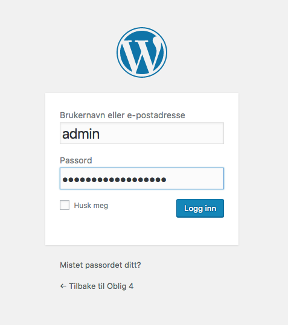
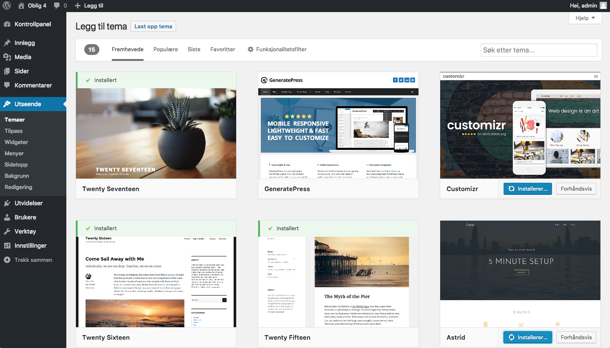

Temaer og utseende i WordPress
WordPress kommer standard med tre installerte «temaer». Temaer er ferdiglagde design med forskjellige muligheter. Man kan installere temaer direkte fra plattformen, eller via wordpress.org. Jeg ser for meg en standard lettlest blogg ment for familien. Nedenfor ser du hvilke muligheter vi har til å tilpasse temaet "Twenty Seventeen".

Det finnes tusenvis av temaer å velge blant. Det kan være lurt å se på de som er populære og høyt rangert, da dette er et kvalitetstegn i form av funksjonalitet og responsivitet. Når du skal installere et tema trykker du bare "installer" i biblioteket under fanen "Utseende". Her har jeg installerer jeg tre andre temaer. 
Nå som jeg har flere temaer å velge blant, kan jeg se hvilke muligheter de forskjellige gir meg. Her ser jeg hva jeg kan gjøre med temaet "Astrid". Her kommer bilde!